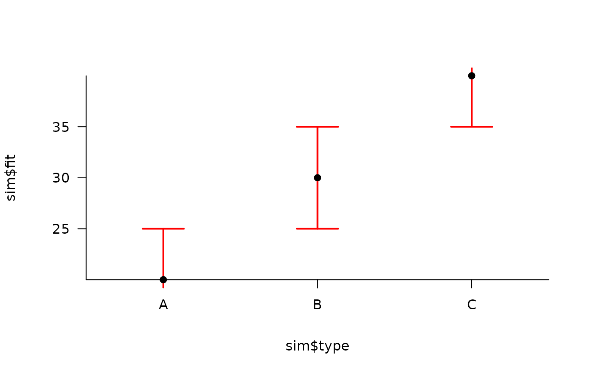
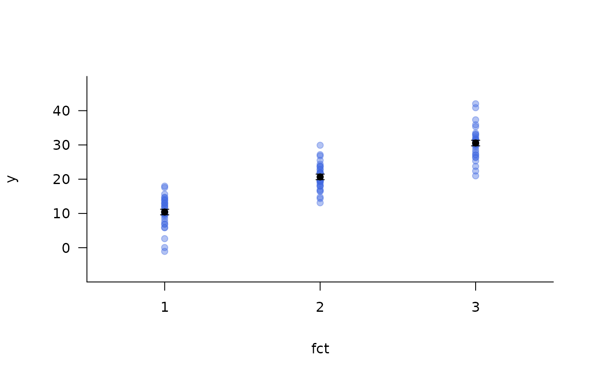

This function is used to add error bars (and fitted values) to a plot. Fitted values are marked as points (if requested) around which error bars are drawn (horizontally or vertically as appropriate). Error bars can be specified via the values of the explanatory variable (x), the fitted values (fit) and (a) their standard errors (which are multiplied by a user-defined scale parameter to define the limits of each error bar) or (b) the lower and upper values of each error bar (lwr and upr) directly.
The values of an explanatory variable at which the error bars will be placed (e.g. factor levels).
The fitted values from a model, around which error bars will be drawn.
A number or vector of numbers that define(s) the standard error(s) (se) and a scaling parameter (scale) that, together, define the size of the error bars above and below fitted values. Standard errors are multiplied by the scaling parameter (e.g. to convert standard errors into 95 percent confidence intervals). This results in symmetric error bars. Alternatively, the lower and upper limits of the error bars can be defined directly via lwr and upr.
A vector of numbers, of the same length as x, that defines the lower (lwr) and upper (upr) limits of the error bars. By default, these are defined using the se and scale arguments, but they can be defined by the user instead (e.g., if a model returns 95 percent confidence intervals, rather than standard errors, or if error bars are asymmetrical).
A numeric value which defines the length of the horizontal tips of the error bars. length = 0 will suppress the horizontal tips of error bars.
A logical value that defines whether or not error bars will be drawn vertically (FALSE) or horizontally (TRUE). For vertical error bars, x and fit are taken as the x positions at/around which error bars are drawn; this is reversed for horizontal error bars.
A named list of graphical parameters, passed to points which, if provided, will add fitted values as points on top of error bars. An empty list (add_fit = list()) will add fitted values to the plot using default graphical parameters.
(depreciated) See add_fit argument.
Other arguments passed to arrows, which is used to draw error bars, for customisation. Arguments x0, x1, y0 and y1 are obtained from x, fit, and se and scale, or lwr and upr, and should not be provided. Likewise, angle is forced to be 90 degrees (i.e., error bars are forced to have horizontal tips (or no tips, if length = 0)) and should not be provided.
This function is designed for discrete explanatory variables. add_error_envelope is used for continuous explanatory variables to add regression lines and associated error envelopes to plots.
#### Example dataframe
# Define a hypothetical dataframe with predictor values and fitted values
sim <- data.frame(type = factor(LETTERS[1:3]),
fit = c(20, 30, 40))
#### Example (1): Vertical error bars
## Vertical error bars based on SE
# Visualise vertical error bars based on (hypothetical) SE
pretty_plot(sim$type, sim$fit, type = "n", ylim = c(0, 50))
#> pretty$n greater than the number of factor levels; resetting n to be the total number of factor levels.
add_error_bars(sim$type, sim$fit, se = 5, lwd = 3)
#> x values converted to a number for plotting.
# Adjust SE before implementing the function to show CIs
pretty_plot(sim$type, sim$fit, type = "n", ylim = c(0, 50))
#> pretty$n greater than the number of factor levels; resetting n to be the total number of factor levels.
add_error_bars(sim$type, sim$fit, se = 5*1.96)
#> x values converted to a number for plotting.
# Or simply adjust the arument to 'scale'
pretty_plot(sim$type, sim$fit, type = "n", ylim = c(0, 50))
#> pretty$n greater than the number of factor levels; resetting n to be the total number of factor levels.
add_error_bars(sim$type, sim$fit, se = 5*1.96)
#> x values converted to a number for plotting.
## Vertical error bars based on lwr and upper estimates
sim$lwr <- c(10, 5, 35)
sim$upr <- c(30, 40, 45)
pretty_plot(sim$type, sim$fit, type = "n", ylim = c(0, 50))
#> pretty$n greater than the number of factor levels; resetting n to be the total number of factor levels.
add_error_bars(sim$type, sim$fit, lwr = sim$lwr, upr = sim$upr)
#> x values converted to a number for plotting.
#### Example (2): Horizontal error bars
## Horizontal error bars (via horiz = TRUE) based on SEs
pretty_plot(sim$fit, sim$type, type = "n", xlim = c(0, 50))
#> pretty$n greater than the number of factor levels; resetting n to be the total number of factor levels.
add_error_bars(sim$type, sim$fit, se = 5, horiz = TRUE)
#> x values converted to a number for plotting.
## Horizontal error bars (via horiz = TRUE) based on lwr and upr estimates
pretty_plot(sim$fit, sim$type, type = "n", xlim = c(0, 50))
#> pretty$n greater than the number of factor levels; resetting n to be the total number of factor levels.
add_error_bars(sim$type, sim$fit, lwr = sim$lwr, upr = sim$upr, horiz = TRUE)
#> x values converted to a number for plotting.
#### Example (3) Customise error bars by supplying additional arguments via ...
# ... that are passed to graphics::arrows()
pretty_plot(sim$type, sim$fit)
#> pretty$n greater than the number of factor levels; resetting n to be the total number of factor levels.
add_error_bars(x = sim$type, fit = sim$fit, se = 5,
length = 0.25, col = "red", lwd = 2)
#> x values converted to a number for plotting.

#### Example (4): Add the fitted points on by passing a list to the add_fit argument:
pp <- par(mfrow = c(1, 2))
# Example with customised points:
pretty_plot(sim$type, sim$fit)
#> pretty$n greater than the number of factor levels; resetting n to be the total number of factor levels.
add_error_bars(x = sim$type, fit = sim$fit, se = 5, lwd = 2,
add_fit = list(pch = 21, bg = "black"))
#> x values converted to a number for plotting.
# Simply specify an empty list to use the default options:
pretty_plot(sim$type, sim$fit)
#> pretty$n greater than the number of factor levels; resetting n to be the total number of factor levels.
add_error_bars(x = sim$type, fit = sim$fit, se = 5, lwd = 2,
add_fit = list())
#> x values converted to a number for plotting.
par(pp)
#### Example (5): More realistic example using model derived estimates
## Simulate data
# Imagine a scenario where we have n observations for j factor levels
# Successive factor levels have expected values that differ by 10 units
# The observed response is normally distributed around expected values with some sd
## Simulate data
set.seed(1)
n <- 30; j <- 3
fct <- sort(factor(rep(1:j, n)))
# Define means for each factor level
mean_vec <- seq(10, by = 10, length.out = j)
# Define expected values for each fct
mu <- stats::model.matrix(~fct - 1) %*% mean_vec
# Define simulated observations
sd <- 5
y <- stats::rnorm(length(mu), mu, sd)
## Use a model to extract fitted values/coefficients
# Model data, using a means parameterisation for convenience
fit <- stats::lm(y ~ fct - 1)
# Extract fitted values and coefficients
coef <- summary(fit)$coefficients
fit <- coef[, 1]; fit
#> fct1 fct2 fct3
#> 10.41229 20.66387 30.55139
se <- coef[, 2]; se
#> fct1 fct2 fct3
#> 0.8179924 0.8179924 0.8179924
## Add error bars using the default options:
pch_col <- scales::alpha("royalblue", 0.4)
pretty_plot(fct, y, pch = 21, col = pch_col, bg = pch_col)
#> pretty$n greater than the number of factor levels; resetting n to be the total number of factor levels.
add_error_bars(x = 1:3, fit = fit, se = se)
